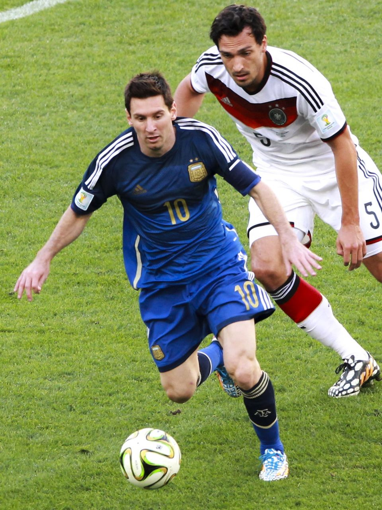

Early Life & Background
Lionel Andrés Messi was born in Rosario, Argentina in 1987.
From a young age, his extraordinary talent was obvious.
Messi joined FC Barcelona's youth academy, La Masia, at the age of 13.

Career Achievements
Messi has achieved records no other player has matched.
Here are some of his most iconic accomplishments:
Major Achievements
- 8 Ballon d'Or awards
- 2022 FIFA World Cup Champion
- 4 Champions League Titles
Career Timeline
- Debut for FC Barcelona in 2004
- Became club all-time top scorer
- Moved to PSG in 2021
- Joined Inter Miami in 2023


More About Messi
Click here to learn more about Messi on his
Inter Miami page
or read his full biography on
Wikipedia.
Messis playstyle is often described as
magic in motion
, highlighting his creativity and intelligence on the field.